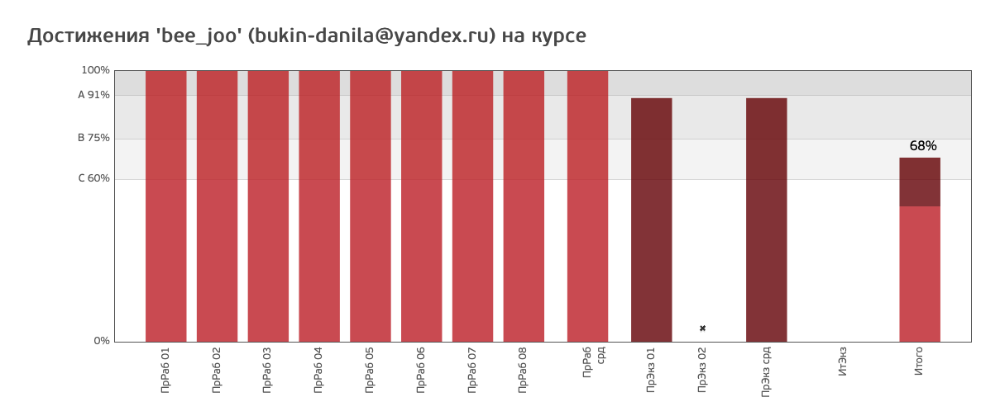

Web Portfolio
Главная страница
О сайте
Добро пожаловать в "Портфолио"!
Дисциплина "Веб-проектирование и веб-языки"
Дисциплина "Серверные веб-технологии"
Дисциплина "Компьютерный практикум"
Дисциплина "Программирование"
Результаты openedu
